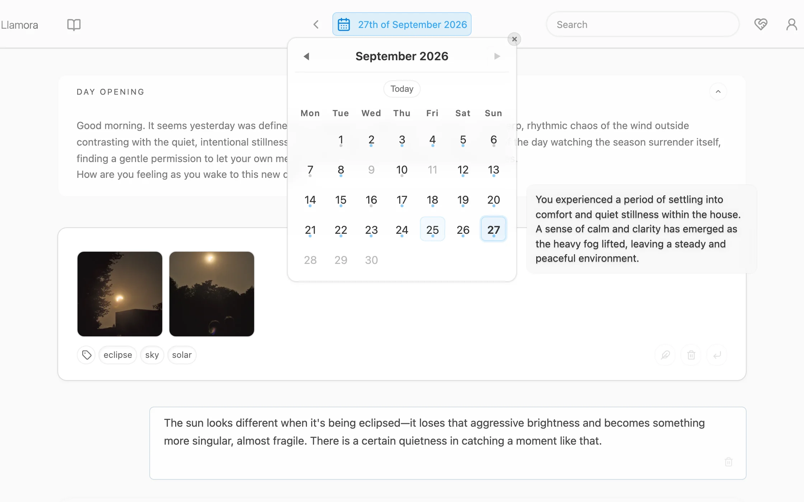
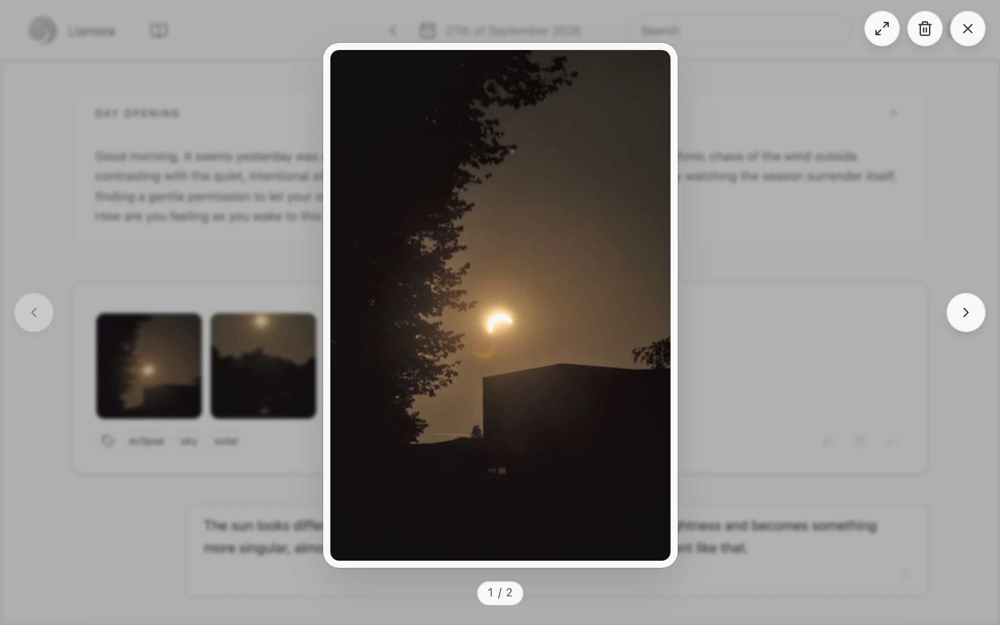
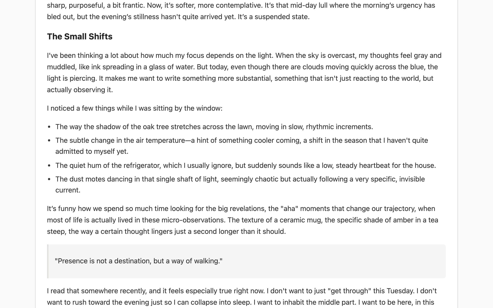
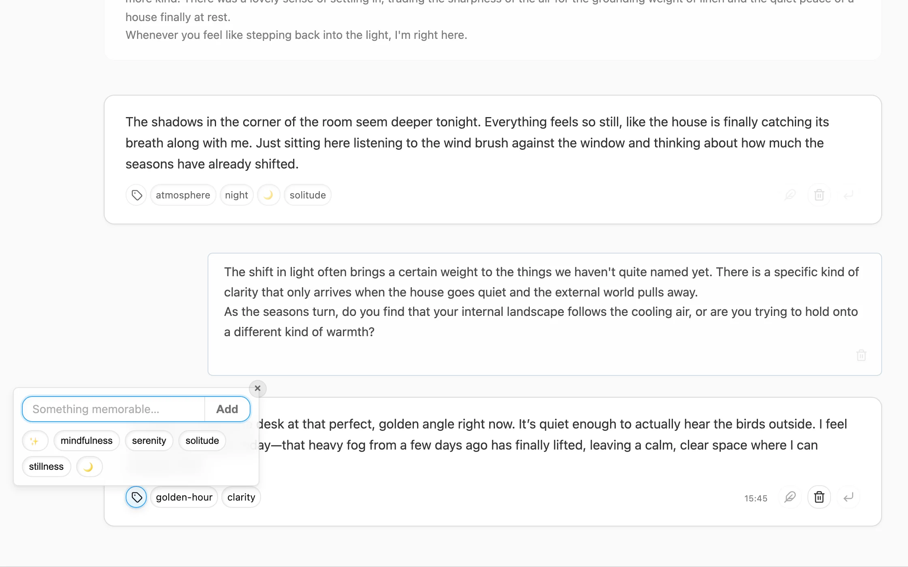
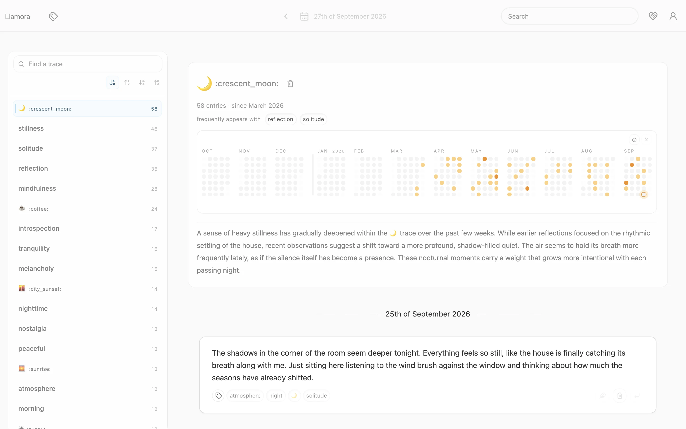
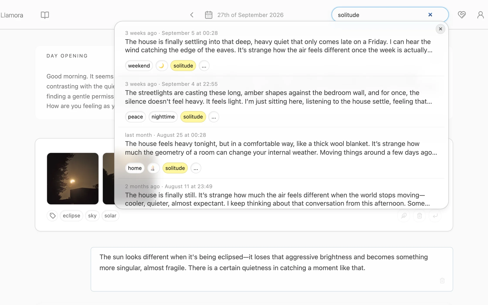
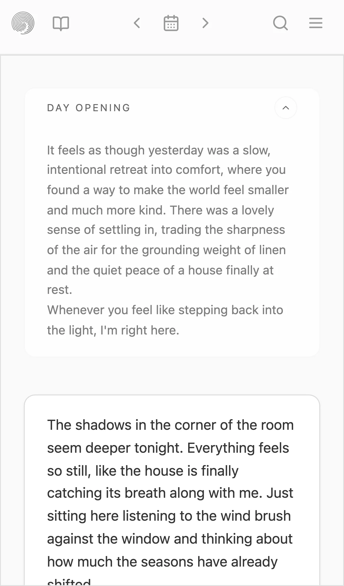

Yours to run
Run it yourself with a local model and nothing leaves your machine. Llamora itself makes no outbound requests: no telemetry, no analytics, no phoning home.
A private journal that remembers with you.
Write a little every day. Each morning, Llamora opens the page with a few lines about the day before. Ask, and it responds to what you wrote. Over weeks it notices what keeps coming back, and helps you find your way to it again.
Registration at llamora.app is closed for now. You can run your own.

A new page opens each day. You write; the model responds only when asked. Each morning it opens the day with a few lines drawn from recent entries and a digest of the day before. Everything stays anchored to its date.

Drop images onto an entry, or pick them from your phone (HEIC included), and open them full size to look back. They are stripped of location and other metadata, then stored encrypted. With a model that can see, replies take them into account.

Write in Markdown when a longer entry wants some shape. Headings, lists, quotes and emphasis render as you would expect, and stay plain text underneath.

After you write, the model can suggest a few traces: light labels that make it easier to return later. Keep the ones that fit. Over time they show where something recurs, what it appears alongside, and which days it touches.


Find past entries by what they were about, not only the words you used. Results are ranked across your whole journal, with matching traces highlighted.

The same journal, laid out for a small screen and a thumb. Write on the way, add a photo from the camera roll, read it back at your desk.

Run it yourself with a local model and nothing leaves your machine. Llamora itself makes no outbound requests: no telemetry, no analytics, no phoning home.
Entries, responses, traces, search and photos are encrypted before they are stored. Your password unlocks a key that lives only in memory while you are signed in.
The model can respond and suggest, but it never scores entries, infers traits or builds a profile of you. The record is yours to interpret.
You need uv and a model server with an OpenAI-compatible API, such as llama.cpp.
# 1. Start a local model
llama-server -hf unsloth/Qwen3-4B-Instruct-2507-GGUF \
--port 8081 -c 40000 --jinja
# 2. Install and run Llamora
uv sync
LLAMORA_LLM__UPSTREAM__HOST=http://127.0.0.1:8081 uv run llamora-server dev
Then open http://localhost:5000 and create an account. The README
covers the demo journal, configuration and running in production.